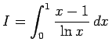
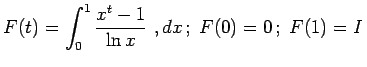

Inhalt Index DeskTop Bronstein

 Integralrechnung Bestimmte Integrale Grundbegriffe, Regeln und Sätze Berechnung bestimmter Integrale
Integralrechnung Bestimmte Integrale Grundbegriffe, Regeln und Sätze Berechnung bestimmter Integrale


Wenn die Berechnung eines unbestimmten Integrals sehr kompliziert ist oder wenn es sich nicht durch elementare Funktionen ausdrücken läßt, dann ist es in einer Reihe von Fällen durch Anwendung verschiedener Methoden (manchmal ,,Kunstgriffe`` genannt) trotzdem möglich, den Wert des Integrals zu berechnen. Dazu gehören die Integration von Funktionen mit komplexen Veränderlichen, wie sie in den Beispielen zur Anwendung des Residuensatzes und des Lemmas von JORDAN demonstriert werden, und auch die Differentiation eines Integrals nach einem Parameter:
| Beispiel |
|
. Parametereinführung t: . |